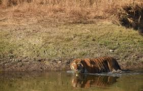
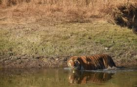

Pench Tiger Reserve or Pench National Park is one of the premier tiger reserves of India and the first one to straddle across two states - Madhya Pradesh and Maharashtra. The reference to Pench is mostly to the tiger reserve in Madhya Pradesh. The portion of the reserve that is in Madhya Pradesh is nestled in the southern slopes of the Satpura range of Central India. Pench Tiger Reserve comprises the Indira Priyadarshini Pench National Park, the Pench Mowgli Sanctuary and a buffer.
It is the same forest area portrayed in the famous "The Jungle Book" by Rudyard Kipling. It derives its name from its life line - the River Pench. Inside the park, the river flows from North to South before going on to join the Kanhan River, while splitting the Park into two, and forming the boundary of Seoni and Chhindwara districts of Madhya Pradesh.
The Meghdoot dam built across Pench River at Totladoh has created a large water body of 72 km², out of which 54 km² falls in Madhya Pradesh and the rest in Maharashtra. The Satpura ranges, which bear the forests of the Protected Area, act as an excellent watershed area for the Totladoh and lower Pench reservoirs.
On the Madhya Pradesh side, the Pench Tiger Reserve encompasses a core area of 411.33 km², with a buffer of 768.3 km², making for a total protected area of 1179.63 km². The core area includes the Mowgli Pench Wildlife Sanctuary, whose area is 118.30 km². The Buffer Zone is constituted by Reserve Forests, Protected Forests, and Revenue land.
 
